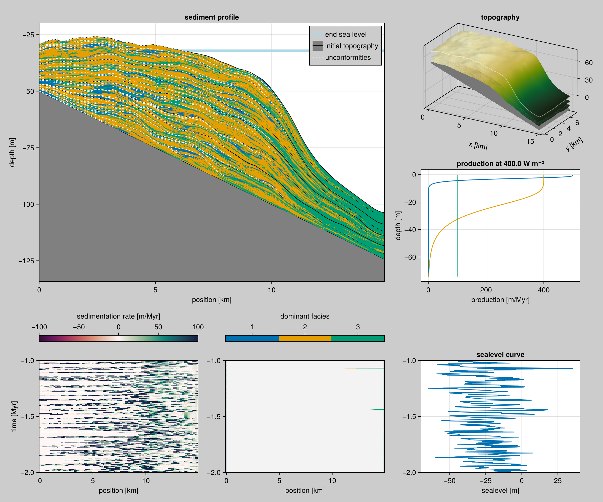

Tabular sea levels
In CarboKitten, the sea-level curve is given as a function of time. This means you can generate sea levels automatically, or if you like interpolate them on a table. In this demo, we show how we can read values from a file and interpolate those for input into the CarboKitten ALCAP model.
CarboKitten has convenience functions for reading tabular data, both TSV and CSV are supported.
The data
In this example we load the sea level data compilation from Miller 2020 [2].
Loading
For this example we have a tab-separated data file, that is distributed with CarboKitten. However, you can have filename point to any tabular data on your filesystem.
You can use the readdlm function in DelimitedFiles to read most text based table formats. See the DataFrames documentation to find out how to read from most popular data file formats.
function miller_2020()
dir = artifact_dir()
filename = joinpath(dir, "Miller2020", "Cenozoic_sea_level_reconstruction.tab")
data, header = readdlm(filename, '\t', header=true)
return DataFrame(
time=-data[:,4] * u"kyr",
sealevel=data[:,7] * u"m",
refkey=categorical(data[:,2]),
reference=categorical(data[:,3]))
endIn this example we'll only use the Lisiecky data set.
using CarboKitten.DataSets: miller_2020
using DataFrames
df = miller_2020()
levels(df.refkey)9-element Vector{String}:
"1146 Holbourn"
"1209 Dawber"
"1209 Westerhold"
"1218 Palike"
"1337 Kochhann"
"1338 Drury"
"1338 Holbourn"
"846 Lisiecki"
"Vema 1930"Interpolating
There are many ways to interpolate the data we have. We will now stick to the package Interpolations and use the linear interpolator in there.
function sea_level()
df = miller_2020()
lisiecki_df = df[df.refkey .== "846 Lisiecki", :]
sort!(lisiecki_df, [:time])
return linear_interpolation(
lisiecki_df.time,
lisiecki_df.sealevel)
endInspecting our interval
We will be running a simulation from 2 million years BA, to 1 million years BA with a time step of 200 years.
const TIME_PROPERTIES = TimeProperties(
t0 = -2.0u"Myr",
Δt = 200.0u"yr",
steps = 5000
)Other parameters
We keep the facies parameters the same as in our other examples. However, because the sea level is fluctuating quite a bit more than in our other examples, we increased the slope two-fold so that the resulting platform fits in our box.
const PATH = "data/output"
const TAG = "lisiecki-sea-level"
const FACIES = [
ALCAP.Facies(
viability_range=(4, 10),
activation_range=(6, 10),
maximum_growth_rate=500u"m/Myr",
extinction_coefficient=0.8u"m^-1",
saturation_intensity=60u"W/m^2",
diffusion_coefficient=50.0u"m/yr"),
ALCAP.Facies(
viability_range=(4, 10),
activation_range=(6, 10),
maximum_growth_rate=400u"m/Myr",
extinction_coefficient=0.1u"m^-1",
saturation_intensity=60u"W/m^2",
diffusion_coefficient=25.0u"m/yr"),
ALCAP.Facies(
viability_range=(4, 10),
activation_range=(6, 10),
maximum_growth_rate=100u"m/Myr",
extinction_coefficient=0.005u"m^-1",
saturation_intensity=60u"W/m^2",
diffusion_coefficient=35.0u"m/yr")
]
const INPUT = ALCAP.Input(
tag="$TAG",
box=CarboKitten.Box{Coast}(grid_size=(100, 50), phys_scale=150.0u"m"),
time=TIME_PROPERTIES,
output = Dict(
:topography => OutputSpec(write_interval = 5),
:profile => OutputSpec(slice = (:, 25))),
ca_interval=1,
initial_topography=(x, y) -> -x / 200.0,
sea_level=sea_level(),
subsidence_rate=50.0u"m/Myr",
disintegration_rate=50.0u"m/Myr",
insolation=400.0u"W/m^2",
sediment_buffer_size=50,
depositional_resolution=0.5u"m",
facies=FACIES)
function main()
run_model(Model{ALCAP}, INPUT, "$(PATH)/$(TAG).h5")
end
Running the model
#| creates: data/output/lisiecki-sea-level.h5
module TabularSeaLevel
using CarboKitten
using DelimitedFiles: readdlm
using DataFrames
using CarboKitten.DataSets: artifact_dir
using Interpolations
using CategoricalArrays
<<tabular-sea-level>>
end
TabularSeaLevel.main()Plotting code
#| requires: data/output/lisiecki-sea-level.h5
#| creates:
#| - docs/src/_fig/miller-sea-level.svg
#| - docs/src/_fig/lisiecki-selection.svg
#| - docs/src/_fig/lisiecki-sea-level-summary.png
#| collect: figures
module PlotTabularSeaLevel
using CarboKitten
using CarboKitten.DataSets: artifact_dir
using CarboKitten.Visualization: summary_plot, sediment_profile!, coeval_lines!
using CarboKitten.Export: read_slice
using DelimitedFiles: readdlm
using CairoMakie
using DataFrames
using Unitful
using Interpolations
using CategoricalArrays
<<tabular-sea-level>>
function plot_miller_data()
df = miller_2020()
fig = Figure(size=(1000,300))
ax = Axis(fig[1, 1]; xlabel="time (Ma BP)", ylabel="sealevel (m)")
for ref in levels(df.reference)
subset = df[df.reference .== ref,:]
lines!(ax, subset.time |> in_units_of(u"Myr"), subset.sealevel |> in_units_of(u"m"), label=ref)
end
fig[1, 2] = Legend(fig, ax)
save("docs/src/_fig/miller-sea-level.svg", fig)
fig
end
function plot_lisiecki_data()
df = miller_2020()
lisiecki_df = df[df.refkey .== "846 Lisiecki", :]
sort!(lisiecki_df, [:time])
sl = sea_level()
fig = Figure(size=(1000, 400))
ax = Axis(fig[1, 1]; xlabel="time (Ma BP)", ylabel="sealevel (m)", limits=((-2.2, -0.8), nothing))
times = time_axis(TIME_PROPERTIES)
lines!(ax, times |> in_units_of(u"Myr"), sl.(times) |> in_units_of(u"m"), label="interpolated sealevel", color=Makie.wong_colors()[2])
scatter!(ax, lisiecki_df.time |> in_units_of(u"Myr"), lisiecki_df.sealevel |> in_units_of(u"m"), label="Lisiecki data")
fig[1,2] = Legend(fig, ax)
save("docs/src/_fig/lisiecki-selection.svg", fig)
fig
end
function plot_result()
fig = summary_plot("data/output/lisiecki-sea-level.h5")
save("docs/src/_fig/lisiecki-sea-level-summary.png", fig)
end
function plot_gg_boundary()
header, data = read_slice("data/output/lisiecki-sea-level.h5", :profile)
fig = Figure(size=(1000, 600))
ax = Axis(fig[1, 1])
sediment_profile!(ax, header, data, show_unconformities = false, show_coeval_lines = false)
coeval_lines!(ax, header, data, [-1.8u"Myr"], linewidth = 3, color = :black, linestyle = :solid)
save("docs/src/_fig/lisiecki_sed_profile_gg_boundary.png", fig)
end
end
PlotTabularSeaLevel.plot_miller_data()
PlotTabularSeaLevel.plot_lisiecki_data()
PlotTabularSeaLevel.plot_result()
PlotTabularSeaLevel.plot_gg_boundary()